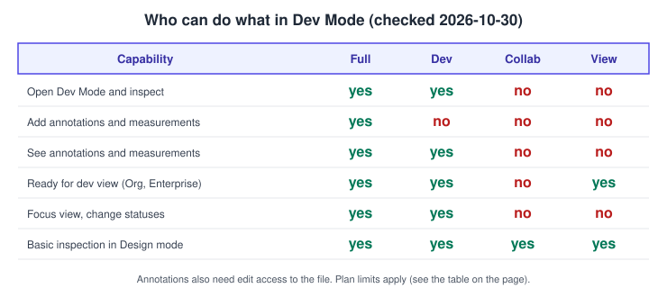
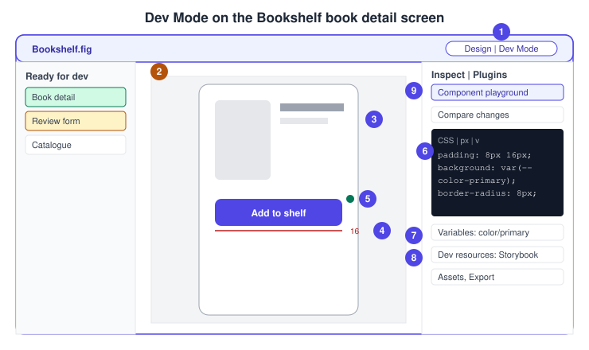
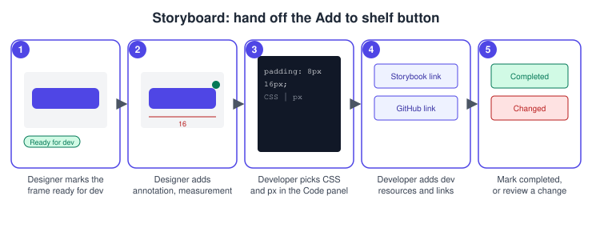
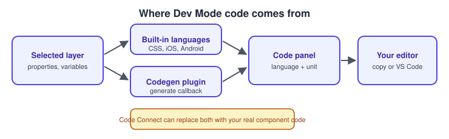

Dev Mode
|
This content was generated with the assistance of AI and should be verified against the official documentation before being relied on in production. |
This page was written on 2026-10-30 against the UI3 interface. Dev Mode is a workspace inside Figma Design files for developers and for designers preparing a handoff. It needs a Full or Dev seat on the Professional, Education, Organization, Government or Enterprise plans; View seats keep basic inspection in Design mode. Dev Mode has been a paid-seat feature since 2024-01-31. Some parts have extra plan limits, noted in each section: the ready for dev view needs Organization or Enterprise, focus view and the Completed status need Education (K-12), Organization, Government or Enterprise, and animation handoff depends on Figma Motion, which is in open beta. Seat names are explained on Plans, Seats and AI Credits.
The running example is the Bookshelf book detail screen with its "Add to shelf" button. The designer prepares the file (see Preparing Files for Handoff), and the developer implements it in React (see Components and Props). Mapping components to real code is covered on Code Connect, and agent-driven handoff on the Figma MCP server.
Seats and access
Open Dev Mode with the toggle in the toolbar or press Shift D (the same shortcut leaves it). A file opened from a Dev Mode link lands in Dev Mode directly. Whether you can use a feature depends on your seat and, for some features, on the plan.

| Capability | Seat | Plan |
|---|---|---|
Open Dev Mode, inspect, copy code, export |
Full or Dev |
Professional, Education, Organization, Government, Enterprise |
Add measurements and annotations |
Full, with edit access to the file |
Same plans |
See measurements and annotations |
Full or Dev, with at least view access |
Same plans |
Compare changes |
Seat not stated in the article |
Same plans |
Ready for dev view |
Full, Dev or View |
Organization, Enterprise |
Focus view |
Full or Dev |
Education (K-12), Organization, Government, Enterprise |
Completed status, changed-design updates |
Full or Dev to change statuses |
Education (K-12), Organization, Government, Enterprise |
Code Connect snippets |
Full or Dev |
Professional, Organization, Government, Enterprise |
Figma for VS Code |
Full or Dev |
All paid plans |
Holding Option (macOS) or Alt (Windows) while hovering measures distance on any plan, but those measurements cannot be saved or shared. A Collab seat has no Dev Mode. The Dev Mode guide itself words the ready for dev view requirement slightly differently from the dedicated article; the table follows the dedicated article, so confirm in your own file.
The Dev Mode interface

-
The Dev Mode toggle in the toolbar (Shift D).
-
The left sidebar lists designs marked ready for dev; pages with such content show a Dev Mode icon. Content outside sections is collapsed by default.
-
The Code section shows the generated code for the selection, with a language and unit dropdown.
-
A measurement drawn by the designer.
-
An annotation, shown as a green dot on the canvas.
-
The Code panel (see the next section).
-
Variables applied to the layer, with suggestions for raw values.
-
Dev resources: links to code, tickets or Storybook.
-
Component details, with the playground and Compare changes.
Selecting a frame centres it and shows its nested layers; each frame shows its last-edited date. Version history stays reachable from the file name menu.
Source: Figma Learn: Guide to Dev Mode
Inspecting: code, units and languages
Selecting an object fills the Inspect tab with a typography preview or box model, layout, colour, typography, text strings, styles and variables, and an auto-generated code snippet. Layer properties have a Code view (default) and a List view; in List view a value is copied by clicking it. Copying and sharing restrictions on a file can hide the Code section.
-
Language: the dropdown at the top right of the Code section switches between the built-in outputs (CSS is the default) and installed codegen plugins.
-
Unit: Inspect settings choose the unit used in generated code (for example px or rem, as offered in your file).
-
Measurements on hover: selecting a layer and hovering a neighbour shows the spacing or padding; holding Option or Alt while hovering a second object shows the distance between them.
-
Assets and export: icons are detected automatically and offered as assets (the detection can be turned off under Main menu, View). The Export section supports PNG, JPG, SVG and PDF, and images can be downloaded as the original source file. See Exporting Assets.
Procedure: read the spacing and code of the Add to shelf button
-
Open the Bookshelf file and press Shift D to enter Dev Mode.
-
Click the "Add to shelf" button instance on the Book detail frame.
-
In the Code section choose CSS and the unit your project uses.
-
Hover the card above the button while the button is selected to read the spacing; hold Option or Alt over a second element to read a distance.
-
Click a value in List view or use the copy action in Code view to copy it into your stylesheet.
Source: Figma Learn: Guide to inspecting

Source: Figma Learn: Guide to Dev Mode
Code snippets and codegen plugins
Built-in snippets describe geometry and styling. To produce framework code, install a codegen plugin from the Plugins tab, which shows recently used and recommended plugins; it then appears in the language dropdown. Plugins can also run inside Figma for VS Code. For team-specific output, Code Connect shows your own component code instead of generated code.
A codegen plugin is a Dev Mode plugin: its manifest sets editorType to ["dev"], capabilities to include codegen, and declares codegenLanguages (each with a label and a value); optional codegenPreferences offer a unit, a select or an action. The plugin registers a generate callback that runs when the selection or the preferences change and returns a list of results, each with a title, a language and the code. The callback times out after 3 seconds and cannot open a UI.
generate callback of a minimal codegen pluginif (figma.editorType === "dev" && figma.mode === "codegen") {
figma.codegen.on("generate", ({ node }) => {
return [
{
title: "Bookshelf",
language: "PLAINTEXT",
code: "Generated code for " + node.name + " goes here"
}
]
})
}
Source: Figma Learn: Guide to Dev Mode
Variables in Dev Mode
When a layer uses variables, the Inspect tab shows them by name. Clicking the name opens the variable details: the variable name, a link to the file hosting it, its collection and mode, its value (with the alias chain to a raw value where relevant), its scope and a code snippet. The details let you switch modes to see the light and dark values.
-
Suggested variables: when a design uses a raw value, click the value; a variable is suggested only if it has exactly the same value and an appropriate scope. Clicking a suggestion copies its name.
-
Collections table: with no layer selected, "Open variables table" in the Variables section shows a read-only version of the Variables modal.
-
Code syntax: the name you see in the snippet comes from the variable’s code syntax. Dev Mode normalises names to valid CSS, so a name with emoji or spaces becomes a hyphenated custom property such as
--blue-0000FF. String variables for font weight are output as numbers and fall back to 400 if no valid match exists.
For the design side of variables see Variables, Collections and Modes and Design Tokens.
Statuses: ready for dev and completed
A designer marks a section, frame or component as ready for dev. Three statuses exist.
| Status | Meaning |
|---|---|
Ready for dev |
Ready for developer review and implementation (all Dev Mode plans) |
Completed |
Development is finished (Education K-12, Organization, Government, Enterprise) |
Changed |
Set automatically when a design marked Ready for dev or Completed is modified; it cannot be set by hand |
Changed is not triggered by shared library component updates, variable or style value changes on attached layers, or temporary changes such as hovering with auto layout.
Procedure: hand off and close the book detail screen
-
In Figma Design or Dev Mode, select the Book detail frame (or its section).
-
Click "Mark as ready for dev" next to the label. For a component, use the button above its upper-right corner.
-
Developers with a Full or Dev seat who have opened the file are notified. Notifications arrive by email, desktop and mobile push by default, and Slack or Microsoft Teams can be added. Several changes within an hour are grouped.
-
After the designer edits the frame, its status shows Changed. Click "Ready for dev" on it, optionally add a reason and click "Done with changes"; earlier viewers are notified.
-
When the work ships, a developer clicks "Ready for dev" and chooses "Mark as completed".
-
To drop the status, click "Ready for dev" and choose "Remove status".
To change notification settings, enable Dev Mode, enter comment mode ©, click Settings at the top of the right sidebar and choose "Status changes" or "Nothing".
Ready for dev view and focus view
The ready for dev view lists every design marked ready for dev in the file (open it with "Ready for dev" in the left sidebar; it appears only when at least one design has a status). You can filter by All, Ready or Completed, and sort by recent activity, pages or name. It needs an Organization or Enterprise plan.
The focus view isolates one design: the usual Dev Mode tools plus the Inspect and Plugins tabs, a layer panel, and the version history of that design. You can resize the top-level frame or switch variable modes (light and dark) to preview; those changes are visible only to you and reset when you leave. Open it by clicking the design’s status and choosing "Show in focus view", or from the ready for dev view; "Copy link to focus view" shares it, and "See all ready for dev" goes back. Marking as completed from here adds a version history entry.
Compare changes
When a frame or component changed since you last viewed it, compare it with an earlier state.
-
Select a top-level frame or component. To compare two components, hold Shift and click both.
-
In the Inspect tab click "Compare changes".
-
Pick a version from the version history timeline (available when comparing a top-level frame over time), or compare an instance with overrides, or a detached component, with its base component.
-
Use the views: Edited layers (edited, added, deleted), Side by side, Overlay with a transparency slider, Code (with language and unit), and Properties (previous and current values).
In focus view you can reach it through the version’s menu, "Compare to latest version". It is available on the Professional, Education, Organization, Government and Enterprise plans. For versions see Version History and Branching.
Annotations and measurements
Measurements and annotations are added by designers (Full seat, edit access) and read by developers.
-
Select the Measurement tool or press Shift M, hover a layer, drag to the end layer, move the measurement off the design and double-click to edit its text.
-
Select the Annotation tool or press Shift T, select a layer, then type a note or click "+ Property" to insert a layer property. Text and properties can be combined, and property annotations stay current when the design changes.
-
Assign a category. Presets are Development, Interaction, Accessibility and Content; editors can rename, delete or add categories (select an annotation, open the category dropdown, "Edit categories…") and the changes apply to the current file only.
-
Filter with right-click, "Filter by", or the zoom dropdown in Dev Mode. Hide all with Main menu, View, then clear Annotations.
Delete a selected item with Delete or Backspace. Annotations are visible in Dev Mode by default.
Dev resources and the component playground
Dev resource links (GitHub, Jira, Storybook, VS Code and others) can be added to a layer, and links added to a component propagate to its instances. Component details show keywords, the main component layout, variants and component properties. "Explore component behavior" opens a playground where you test properties and variable modes without editing the design. See Components and Instances and Variants and Component Properties.
Source: Figma Learn: Guide to Dev Mode
Motion handoff
Animations made in Figma Motion (open beta; Full or Dev seat on paid plans) are handed off from the Inspect panel: select the animated frame, open the Motion tab, click "Show in timeline view" for a read-only timeline with the recreation code, choose "Code", pick CSS (default), React or JSON and click Copy. The Figma MCP server can supply keyframes, timing and easing to a coding agent. See Figma Motion.
Figma for VS Code
The extension (all paid plans, Full or Dev seat) is installed from the Visual Studio Marketplace and needs sign-in on first use. It lets you read and answer comments in real time, get code suggestions from designs, link code files to components through the Dev resources tab (a matching link opens the file in VS Code), browse frames by section, status and page in focus view, filter layers to those ready for development, and review snippets, modes, styles, properties and assets in the Code tab. You can set CSS as the preferred language and choose the unit. See also Desktop, Mobile and VS Code.
Source: Figma Learn: Figma for VS Code
Pitfalls
-
Nothing is ready for the developer until it carries a status; the ready for dev view is hidden in files without one.
-
Annotations and measurements need a Full seat and edit access; a Dev seat can only read them.
-
Hold-Option distances are temporary and not shared.
-
Variable value changes and library updates do not set Changed, so announce them separately.
-
Plan limits differ: confirm focus view and the Completed status on your plan.
What older guides say
Older tutorials describe the Inspect tab with copyable CSS, iOS and Android snippets, and treat Dev Mode as newly released. UI3 has been the only interface since 2025-04-30, and Dev Mode has been a paid Dev or Full seat feature since 2024-01-31, with statuses, focus view, compare changes, annotations, codegen plugins, Code Connect, Figma for VS Code and the MCP server added since.